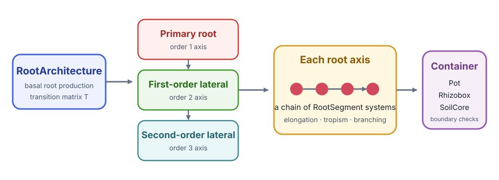
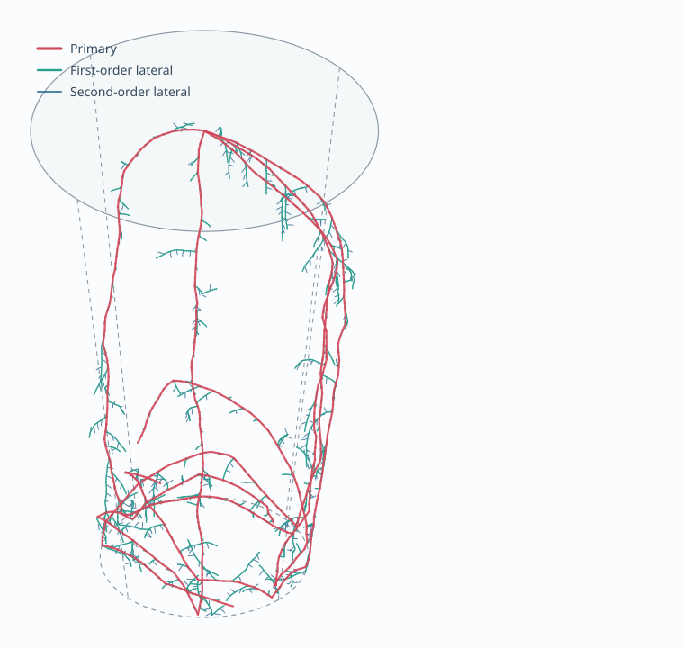

Root System Architecture
CropRootBox.jl implements a dynamic root system architecture inspired by CRootBox. It demonstrates three Cropbox features that ordinary process models use less often: stochastic parameters, external geometric resources, and dynamic child systems.
The root-growth rules originate from CRootBox: a structural–functional modelling framework for root systems (Annals of Botany, 2018). CropRootBox is a smaller Julia proof of concept, introduced with Cropbox: a declarative crop modelling framework (in silico Plants, 2023); it is not a complete reimplementation of CRootBox.
Follow-on studies show how this implementation has been used and extended:
- resource-specific elongation and branching in perennial grasses used CropRootBox to compare simulated root length by branching order;
- time-series image phenotyping of adventitious roots connected RhizoVision measurements to CropRootBox parameterization and evaluation in two and three dimensions;
- switchgrass root plasticity under different phosphorus forms continued the same root-box and architecture-modeling line for nutrient acquisition.
CropRootBox is not a dependency of the Cropbox documentation project. Run this tutorial in an environment where CropRootBox is installed. An interactive rendering backend such as GLMakie is optional and is not required for configuration, simulation, summaries, or geometry export.
Install and load
using Pkg
Pkg.add("Cropbox")
Pkg.add("CropRootBox")
using Cropbox
using CropRootBoxUnderstand the hierarchy
RootArchitecture coordinates root types such as PrimaryRoot, FirstOrderLateralRoot, and SecondOrderLateralRoot. Start with their parameter surfaces.
parameters(CropRootBox.RootArchitecture; alias = true)
parameters(CropRootBox.BaseRoot; alias = true)
look(CropRootBox.RootArchitecture)The transition matrix T controls which root type can produce another type. Parameters such as basal length, apical length, inter-lateral distance, maximum length, growth rate, insertion angle, and radius describe each root class.

RootArchitecture produces root axes according to transition matrix T. Each axis is itself a chain of RootSegment systems whose new positions are checked against a geometric container.
The most useful parameters to recognize are:
| Parameter | Meaning in the implementation |
|---|---|
lb, la | basal and apical zone lengths |
ln | spacing between lateral branches |
lmax | maximum length of one root axis |
r | potential elongation rate |
Δx | target axial segment length and geometric resolution |
θ, σ | mean insertion angle and its spatial variation |
N | controls how many candidate tropism directions are compared; a fractional part is handled probabilistically |
a | root radius/thickness parameter retained in geometry output |
Rows of T are parent types and columns are possible child types. Entries are selection weights: the maize matrix below makes primary roots produce first-order laterals and first-order laterals produce second-order laterals. If a row sums to less than one, the remaining probability produces no branch.
Configure a small maize architecture
root_maize = @config (
CropRootBox.RootArchitecture => :maxB => 5,
CropRootBox.BaseRoot => :T => [
# P F S
0 1 0; # primary
0 0 1; # first-order lateral
0 0 0; # second-order lateral
],
CropRootBox.PrimaryRoot => (
lb = 0.1 ± 0.01,
la = 18.0 ± 1.8,
ln = 0.6 ± 0.06,
lmax = 89.7 ± 7.4,
r = 6.0 ± 0.6,
Δx = 0.5,
σ = 10,
θ = 80 ± 8,
N = 1.5,
a = 0.04 ± 0.004,
color = CropRootBox.RGBA(1, 0, 0, 1),
),
CropRootBox.FirstOrderLateralRoot => (
lb = 0.2 ± 0.04,
la = 0.4 ± 0.04,
ln = 0.4 ± 0.03,
lmax = 0.6 ± 1.6,
r = 2.0 ± 0.2,
Δx = 0.1,
σ = 20,
θ = 70 ± 15,
N = 1,
a = 0.03 ± 0.003,
color = CropRootBox.RGBA(0, 1, 0, 1),
),
CropRootBox.SecondOrderLateralRoot => (
lb = 0,
la = 0.4 ± 0.02,
ln = 0,
lmax = 0.4,
r = 2.0 ± 0.2,
Δx = 0.1,
σ = 20,
θ = 70 ± 10,
N = 2,
a = 0.02 ± 0.002,
color = CropRootBox.RGBA(0, 0, 1, 1),
),
)mean ± standard_deviation creates a distribution sampled during instance construction. It is configuration data, not an error bar attached to one fixed value. The samples are also constrained by declaration bounds where those bounds exist; inspect a constructed instance when a distribution is close to a physical limit.
Construct the container and architecture
container = instance(CropRootBox.Pot)
root = instance(CropRootBox.RootArchitecture;
config = root_maize,
options = (; box = container),
seed = 0,
)The container is passed through options because it is an external geometric resource required by construction, not a scalar parameter stored in the normal configuration tree.
seed=0 makes stochastic draws and production choices reproducible. Use the same seed for controlled treatment comparisons and different explicit seeds for independent replicates.
Simulate growth
result = simulate!(root; stop = 100u"d")
result[end, :time]simulate! is appropriate because the final geometric instance is needed for export. The root object has been mutated to day 100.
Do not call simulate!(root; stop=100u"d") again expecting a replicate; it continues the existing architecture. Construct a new seeded instance instead.

A representative 15-day realization using the configuration above and seed=0. The shorter time keeps individual root orders legible: primary roots are red, first-order laterals green, and second-order laterals blue. The dashed frustum is the pot boundary. The image is projected from the model's actual segment coordinates.
Gather segments and calculate summaries
segments = gather!(root, CropRootBox.BaseRoot;
callback = CropRootBox.gatherbaseroot!,
)
total_length = sum(segment.length' for segment in segments)
segment_count = length(segments)
axis_count = count(segment -> iszero(segment.zi'), segments)Despite the callback name, the traversal visits the chained BaseRoot objects that make up root geometry. length(segments) is therefore a segment count, not the number of complete root axes. A newly produced axis starts with zi == 0, which gives the separate axis_count above. Summing segment lengths does give total root length.
For a time series of non-scalar structure, use the simulate do-block form:
summary = simulate(CropRootBox.RootArchitecture;
config = root_maize,
options = (; box = container),
seed = 0,
stop = 100u"d",
snap = 10u"d",
target = [],
) do rows, s
segments = gather!(s, CropRootBox.BaseRoot;
callback = CropRootBox.gatherbaseroot!)
rows[1][:segment_count] = length(segments)
rows[1][:axis_count] = count(segment -> iszero(segment.zi'), segments)
rows[1][:total_length] = isempty(segments) ? 0.0u"cm" :
sum(segment.length' for segment in segments)
endtarget=[] keeps the ordinary output narrow; the time index remains, and the do-block adds the three structural summaries. Snapshot infrequently enough to keep traversal and output costs under control. The initial architecture is also collected when the initial time satisfies the snapshot rule.
Summarize length by soil depth
The test examples use SoilLayer containers as geometric predicates. The following creates three 10 cm layers and adds one length column per layer inside the same do-block pattern:
layers = [
instance(CropRootBox.SoilLayer;
config = CropRootBox.SoilLayer => (
d = depth,
t = 10u"cm",
),
)
for depth in (0:10:20)u"cm"
]
for (i, layer) in enumerate(layers)
lengths = [
segment.length'
for segment in segments
if segment.ii(layer)
]
rows[1][Symbol("layer_", i)] = isempty(lengths) ? 0.0u"cm" : sum(lengths)
endThis classifies a segment using the position tested by ii; it is a practical depth summary, not an exact clipping of every segment at layer boundaries. Use shorter Δx or geometric intersection code if boundary precision matters.
Export geometry
The package can export the completed architecture without a plotting dependency.
CropRootBox.writevtk("maize-root", root)
CropRootBox.writestl("maize-root", root)VTK is useful for scientific visualization and attribute inspection; STL is a surface format. Choose the format according to the downstream tool and retain the seed and configuration alongside exported files.
writepvd exports a time-indexed VTK collection by running fresh simulations:
CropRootBox.writepvd("maize-series", CropRootBox.RootArchitecture;
config = root_maize,
options = (; box = container),
seed = 0,
stop = 30u"d",
snap = 5u"d",
)This writes several files and a collection directory, so use it only when a geometry time series is needed. writevtk or writestl is cheaper for one selected final state.
Interactive rendering requires an additional Makie backend. It is deliberately optional:
using GLMakie
scene = CropRootBox.render(root)
GLMakie.save("maize-root.png", scene)Replicates and treatments
Use an explicit loop when both treatment and stochastic replicate identity must be visible:
treatments = [
(name = "baseline", config = root_maize),
(name = "slower primary", config = @config(
root_maize,
CropRootBox.PrimaryRoot => :r => 4u"cm/d",
)),
]
outputs = []
for treatment in treatments, seed in 1:10
container = instance(CropRootBox.Pot)
result = simulate(CropRootBox.RootArchitecture;
config = treatment.config,
options = (; box = container),
seed,
stop = 100u"d",
snap = 10u"d",
) do rows, s
# add summaries
end
result.treatment .= treatment.name
result.replicate .= seed
push!(outputs, result)
endDo not share one mutable container or output accumulator across threaded scenario simulations unless the model explicitly guarantees thread safety.
Performance checklist
- use a coarse enough
Δxfor the scientific question; - reduce
maxBwhile developing the analysis; - restrict simulation duration and snapshot frequency;
- collect aggregate metrics instead of full geometry at every step;
- export geometry only at selected times;
- warm up one small instance before benchmarking;
- separate model construction, simulation, traversal, and file-writing time.
The generic traversal functions used here are described in Dynamic Hierarchies; simulation callbacks and random-seed behavior are detailed in Simulation.